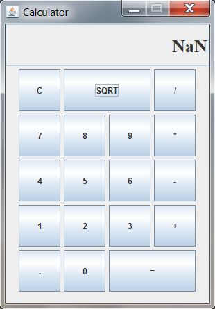

Hands-on, practical engineer who excels in a fast-paced environment.
Proven ability to lead and collaborate with multidisciplinary teams to solve complex technical problems.

Java Calculator (running in Windows 7)
Java Calculator
Authored a basic calculator for a course homework assignment. It includes operators for basic arithmetic and square-root, and maintains order-of-operations.
The program (view code) implements a simple GUI with Swing.